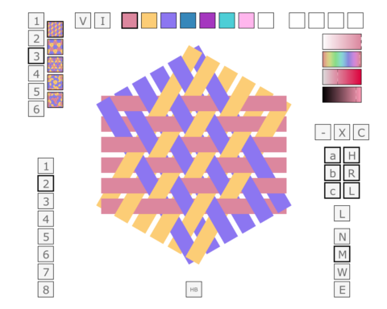
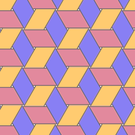
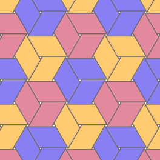
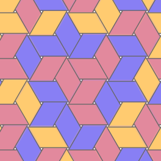

Triaxial weaving editor
MadWeaver
Edit patterns formed by three families of interlacing strips. Use planar mode to change colors, spacing, orientation, and visibility, or corner mode to edit a supported corner diagram.

Runs in your browser · No account or installation

Patterns
Color formulas
The editor has five color formulas. These previews show three of them. Planar mode also supports changes to strip spacing and the visibility of hexweave classes and strip directions.



Editing
Planar controls
- Choose a pattern. Start with one of five previews on the left of the editor.
- Paint a strip. Select a color at the top, then click a strip to recolor it.
- Set visibility. Show or hide a strip direction or hexweave class.
Use a mouse or trackpad for the original editor. Save Project keeps an editable copy you can reopen offline. Save before leaving; there is no autosave.
Background
About MadWeaver
MadWeaver is a JavaScript and SVG editor by Richard Harris. Planar mode supports eight palette colors, five color formulas, four strip spacings, and up to 24 strips per direction. Corner mode provides a finite catalogue of supported constructions, with strip painting and seam inspection. Physical constructibility of the corner diagrams remains unverified.
The repository also preserves historical material about Handbook of Triaxial Weaves: A Guide to HexWeave and MadWeave, by Elizabeth Harris and Charlene St. John.
Original project notes